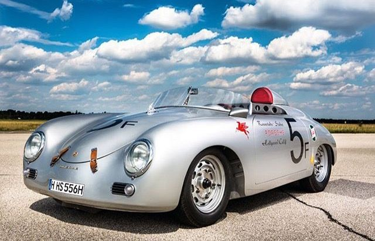
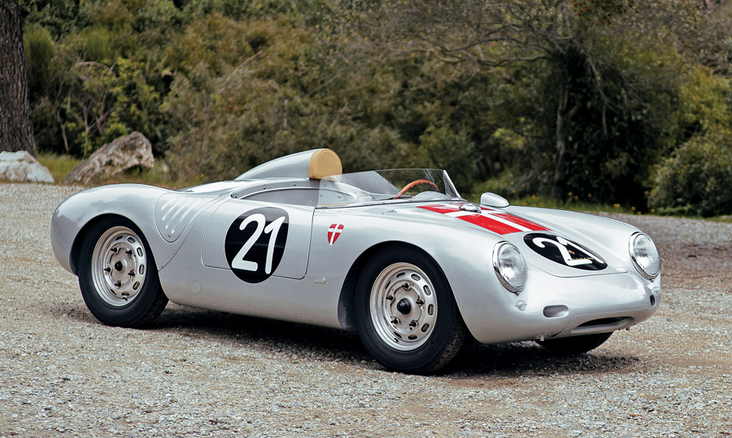
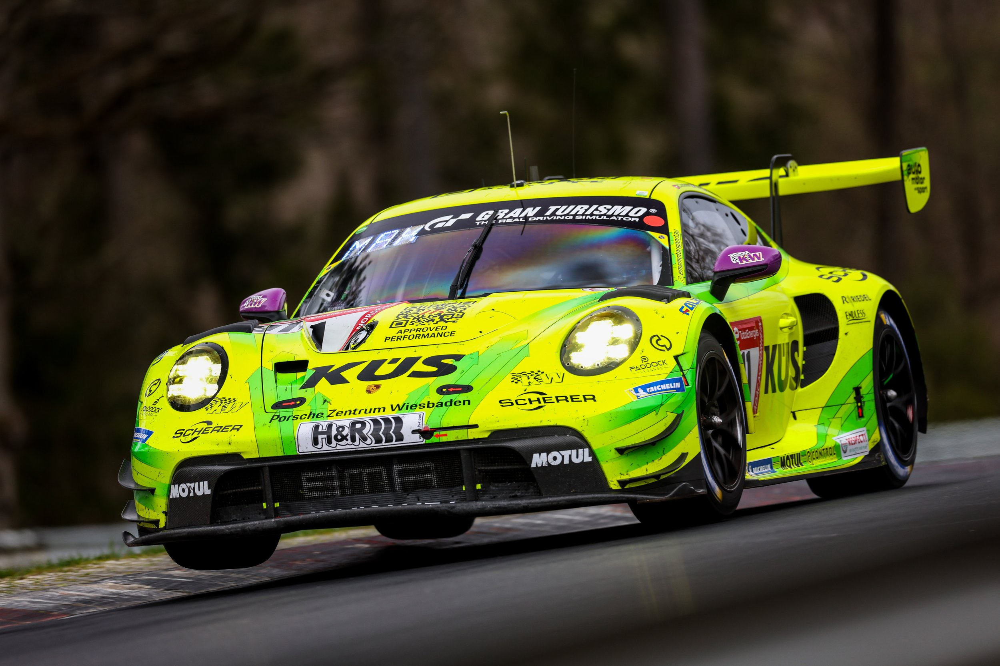

In June 1948, the well-known 356 Roadster (the Porsche Nr.1), with an elegant design by Erwin Komenda, also responsible for the design of the Beetle. And with the evolution of this car, Porsche would leave its military past to take on a sports future. Thus, the brand began its participation in motorsport with the 356 Aluminum Coupé in the late 1940s. In 1951, the sports car manufacturer Porsche gained international fame, due to the victory of its 356 SL in the 24-hour Le Mans competition. |
 |
|---|
|  | And thanks to Porsche's continued development for racing, in 1954 the company launched the successful 550 Spyder, which recorded its first victory in 1956 at the Italian Targa Florio race.And 10 years after this winning car, in 1964 Porsche launched the 911, which became the maximum symbol of the brand, after representing total success from the race tracks to the garage of European citizens. |
|---|
And thanks to Porsche's continued development for racing, in 1954 the company launched the successful 550 Spyder, which recorded its first victory in 1956 at the Italian Targa Florio race.And 10 years after this winning car, in 1964 Porsche launched the 911, which became the maximum symbol of the brand, after representing total success from the race tracks to the garage of European citizens. |
 |
|---|